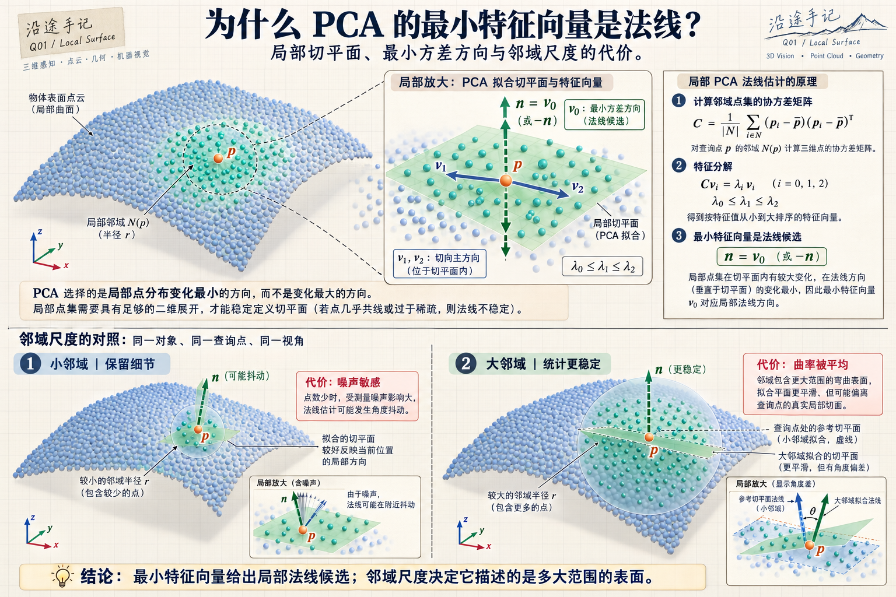
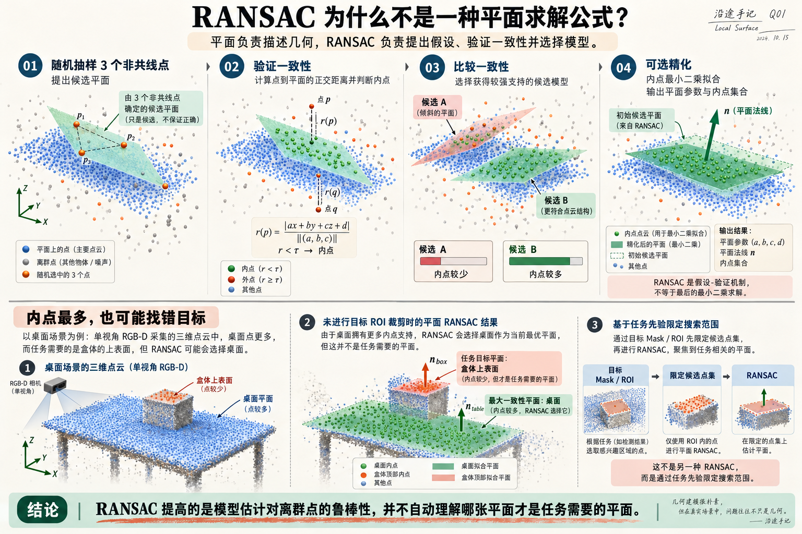
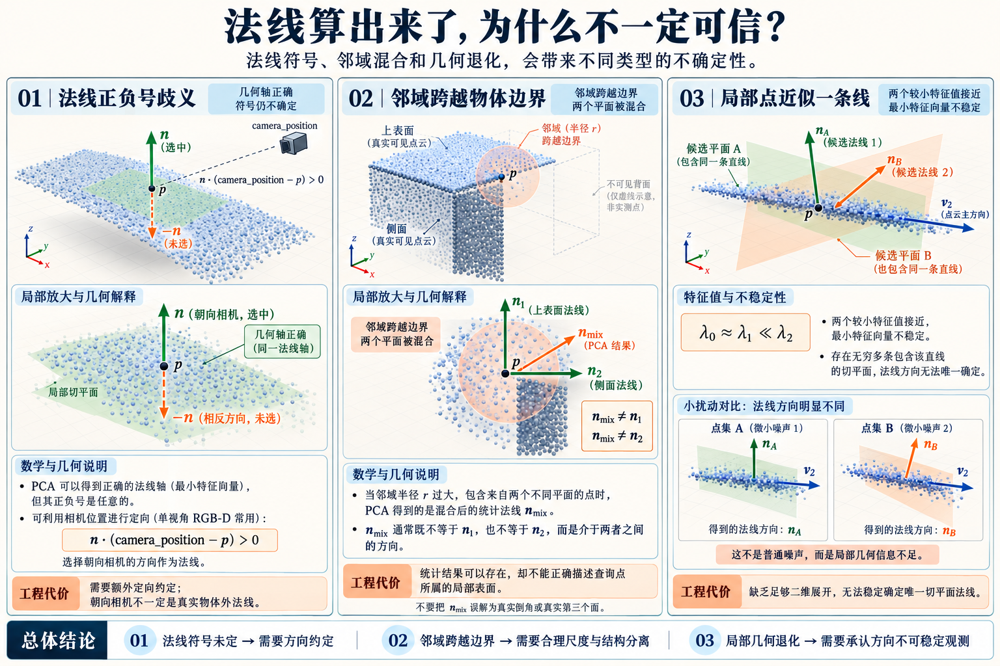

1981
Fischler & Bolles · Random Sample Consensus
Random Sample Consensus: A Paradigm for Model Fitting...
面对包含大量错误观测的数据，提出从少量样本产生模型假设、再从全体观测中寻找一致支持的估计框架。原始论文并非专门研究点云平面。
获得的能力在具有离群点的数据中，仍有机会定位一个受到足够多观测支持的模型。
代价与边界需要模型定义、内点阈值与合理采样；支持最多的模型不一定是任务目标。
前人怎样从一片不平整的点云估计表面方向？PCA、最小二乘、RANSAC 为何经常出现在同一条工程链里，却承担不同职责？这一篇聚焦经典研究、实际机制、几何退化与工程取舍。
法线描述局部表面的朝向；平面描述一整片点能够遵循的几何关系；RANSAC 负责在异常数据里反复提出模型假设并寻找一致支持。它们处在不同概念层次，常常被组合，却不是必需的三步流水线。
每个查询点的邻域估计一根垂直于局部切面的方向轴。
用一组共同参数解释同一局部或区域里的多个点。
随机生成假设，以模型与观测的一致性决定哪些数据值得信任。
对每个点找邻域，在邻域内拟合局部切平面，由最小方差方向提取法线。
若输入已经是一组可靠的平面点，可直接最小二乘；当存在大量异面点时，可用 RANSAC 提出平面并筛选内点。
“使用 RANSAC 求法线”可能是先拟合整片平面再读取它的法线，不等于它直接替代了每点邻域 PCA 法线估计。
这里只选择具有代表性的里程碑。它们并非同一技术从旧到新的替换链：RANSAC 属于鲁棒估计，Hoppe 属于无序点的表面构建，Efficient RANSAC 面向点云几何基元检测。
面对包含大量错误观测的数据，提出从少量样本产生模型假设、再从全体观测中寻找一致支持的估计框架。原始论文并非专门研究点云平面。
将局部切平面、法线方向组织、隐式表面等思想用于从无序点集恢复曲面。对今天学习局部 PCA 与法线一致性仍有经典价值；其论文目标是表面重建，不应被简写为单独发明“邻域 PCA 法线”。
把随机假设与高效点云处理结合，在无序点云中自动检测平面、圆柱、球等几何基元；适合展示 RANSAC 怎样从一个估计范式发展为较完整的三维几何提取流程。
在 Orientation 中，我们关心整个点集延伸最大的方向；到了曲面邻域，这个问题变成“怎样找到贴近这些点的局部切平面”。方向差别并不是 PCA 改变了算法，而是优化目标变了。
约定 λ₀ ≤ λ₁ ≤ λ₂。在邻域点接近二维平面分布且两条切向信息充分时，点云在切面内有较大变化，在垂直切面方向上变化最小，所以 n = v₀ 可以作为局部法线候选。
对相同邻域、正交距离平方损失，协方差最小特征向量对应最小二乘正交拟合平面的法线。
这里只得到局部法线轴；n / −n 的符号、抓取方向和夹爪旋转仍需要额外约定。
| 邻域选择 | 换来了什么 | 付出的代价 |
|---|---|---|
| KNN 固定点数 | 保证每个有效查询点拥有一定数量的邻居 | 点密度变化时，物理邻域尺度也跟着变化 |
| Radius 固定半径 | 在统一空间尺度上观察局部表面 | 稀疏区域可能邻居不足，密集区域计算量增大 |
| 更小邻域 | 更容易保留细节和局部曲率变化 | 易受噪声、孤立点和量测不稳定影响 |
| 更大邻域 | 统计更充分，平滑噪声的能力更强 | 容易跨越边缘，把两个表面混合成错误的法线 |
images/q01-local-surface-fig-01-pca-normal-neighborhood-scale.png
不要只看计算结果是不是单位向量。还要看邻域是否跨边界、特征值是否支撑二维切面，以及扰动或尺度改变后方向是否稳定。
先有需要拟合的模型，再考虑如何从包含异常点的数据中挑出支持这个模型的点。RANSAC 并不专属于平面，给它不同的几何模型就可以估计直线、圆、平面或其他参数化形状。
其中 (a,b,c) 是平面法线的未归一化系数。三点不共线时可以确定一个候选平面。
用点到候选平面的正交距离判断内点，对多个候选做一致性比较。
这里最小样本求平面和对内点进行最小二乘精化可以采用不同求解过程；RANSAC 负责组织假设、检测一致性和选择候选，不能被等同为某一个线性方程求解器。
简化假设：随机独立采样、内点比例为 w，期望至少一次抽到全内点最小样本的概率为 p。公式用于理解采样次数为何会随内点比例下降迅速增加；工程库可能使用自适应停止或其他实现策略。
过小会拒绝含噪声的真实内点；过大可能把邻近不同表面的点一起收进来。单位必须与输入点云坐标一致。
越低，随机样本全部来自目标面的机会通常越少；预先按目标 Mask / ROI 裁剪可能很重要。
最大内点平面可能是桌面而不是目标面；RANSAC 不理解“哪个面适合抓取”。
images/q01-local-surface-fig-02-ransac-plane-fitting.png
RANSAC 能减少离群点对模型拟合的破坏，但仍需要模型、阈值、目标区域与结果验证；当候选面本身不符合任务时，内点越多也不代表越正确。
对切平面而言，n 与 −n 给出同一个几何平面。协方差的特征向量同样只确定方向轴，没有天然“朝外”的箭头。对夹爪接近方向，这个符号却往往不能忽略。
单视角相机位置已知时，可以用上述方向约定让法线大致朝向相机；若结果不符合约定，则翻转 n。这是 PCL 文档所采用的视点定向思路，Open3D 也提供对应接口。
避免同一片可见表面上出现随机正反箭头，便于法线显示、局部匹配和接近方向构造。
朝向相机不等于真实物体外法线，也不自动等于夹爪应该从这侧进入。多视点数据要采用更合适的定向规则。
大多数实际风险来自局部几何是否真能定义一个平面，以及输入里是否混入了其他结构。它们不一定能通过增加随机迭代次数解决。
盒体转角附近的邻域若同时包含两面，PCA 得到的法线可能偏向中间方向。RANSAC 若阈值太大，也可能把相邻面混在一起。
若邻域主要沿一条线分布，两个较小特征值可能接近；法线所处的平面方向无法唯一确定。即使程序返回一个单位向量，也可能对微小噪声非常敏感。
反光、孔洞、单视角遮挡和深度边缘混合会改变局部点集。RANSAC 可以拒绝部分异常点，但无法凭空确定没有被观测的背面几何。
images/q01-local-surface-fig-03-normal-reliability-and-degeneracy.png
如果局部邻域近似二维面，先考虑局部 PCA；如果一组点已经属于同一平面，最小二乘足够直接；如果存在大量异面点或离群点，再考虑 RANSAC。如果几何本身不支持唯一法线，就承认不确定性。
这张表是本篇最终要留下的复习入口：每一种做法都有明确的适用条件，也都有不能自动跨越的边界。
| 想得到什么 / 当前条件 | 优先思路 | 换来了什么 | 必须接受的代价 |
|---|---|---|---|
| 每个点附近的表面朝向 | 邻域 PCA Normal | 局部、细粒度方向信息 | 邻域半径、噪声与正负号 |
| 目标 ROI 已经是一片干净平面 | 最小二乘 / PCA 平面 | 统一且可解释的面参数 | 依赖正确分组，少量严重异常点会拉偏 |
| 平面数据混有大量异面点 | 平面模型 + RANSAC | 筛出具有一致支持的平面 | 阈值、迭代与模型选择风险 |
| 希望提取多个基本形状 | 基元检测 / 迭代分割 | 多个平面或圆柱候选 | 形状假设、分割顺序与复杂度 |
| 法线向量正负混乱 | 视点 / 一致性定向 | 获得一致的有向法线 | 朝向规则不是必然的外法线语义 |
| 要用于夹爪接近方向 | 法线 + 夹爪约束 | 为 Grasp Pose 提供部分旋转约束 | 接近侧、平面内旋转、接触与碰撞仍需确定 |
① 量什么？ 局部法线还是统一平面。 ② 信什么？ 有效深度、局部二维结构或几何模型。 ③ 缺什么？ 朝向、内点可信度、剩余旋转自由度或可接触空间。
这部分只给能直接上手的接口骨架，不展开安装细节。代码参数是 API 调用示例，不是对任意 D435i/Orbbec 场景有效的固定推荐值。
import numpy as np
import open3d as o3d
# pcd：已构建且处于米制相机坐标系的目标点云
pcd.estimate_normals(
search_param=o3d.geometry.KDTreeSearchParamHybrid(
radius=0.015, max_nn=30
)
)
pcd.orient_normals_towards_camera_location(
camera_location=np.array([0.0, 0.0, 0.0])
)
# 若希望对某个目标 ROI 提取一片平面：
plane, inliers = pcd.segment_plane(
distance_threshold=0.005, # 米，按噪声与目标尺度调整
ransac_n=3,
num_iterations=1000
)
a, b, c, d = plane
normal = np.array([a, b, c], dtype=float)
normal /= np.linalg.norm(normal)
# 返回的平面符号同样需要按具体任务定向// pcl::NormalEstimation<PointT, pcl::Normal>
// 设置 KSearch 或 RadiusSearch，再计算每点法线
pcl::SACSegmentation<pcl::PointXYZ> seg;
seg.setOptimizeCoefficients(true);
seg.setModelType(pcl::SACMODEL_PLANE); // WHAT: 平面模型
seg.setMethodType(pcl::SAC_RANSAC); // HOW: RANSAC 估计
seg.setDistanceThreshold(0.005); // 坐标单位须一致
// setInputCloud + segment 得到内点 indices 与 coefficients研究史优先链接原作者或期刊入口；工程操作链接 PCL / Open3D 官方文档。文中“对抓取的启发”是工程归纳，不应冒充原论文的实验结论。
局部 PCA 告诉我们附近的表面大致朝哪里；平面拟合告诉我们一组点能否共享一个几何模型；RANSAC 帮助我们在异常点存在时寻找可信的模型支持。
以后不必纠结“应该用 Normal 还是 RANSAC”这样的错误二选一。真正要判断的是：当前观测是不是可靠表面、目标是哪片面、法线朝哪边，以及这些约束是否足够构造夹爪姿态。